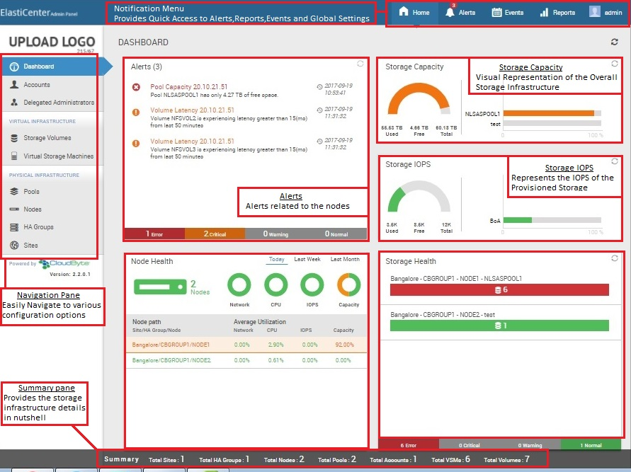

CloudByte ElastiStor feature highlights
Quality of Service (QoS) within shared storage
CloudByte ElastiStor assures highly predictable performance using its unique QoS-centric approach to provisioning. The feature highlights include:
- Guaranteed throughput, latency, and IOPS: Easily commission storage with guaranteed throughput, latency, and IOPS (Input/Output Operations Per Second) at various levels. You can decide to configure QoS at a Pool level, VSM level, or Storage Volume level.
- Multi-dimensionality: Configure IOPS, throughput, latency, and capacity.
- Grid-like service: Utilize available unused storage resources efficiently.
- On-demand modification: Edit settings at a later point of time without restart.
See Also:
Multi-protocol support
CloudByte ElastiStor provides LUN access using the following protocols:
- NFS
- iSCSI
- CIFS
- Fiber Channel (FC)
See Also:
Simplified storage provisioning
Assume that you require 20 GB storage and 10000 IOPS. With too many pools and VSMs, manually verifying the apt Pool is a cumbersome task. Instead, use the auto-provisioning feature in ElastiStor to handle this situation ElastiStor provides a simplified storage provisioning where it intelligently provides a list of best-fit pools. Server disk space is divided into storage spaces based on the number of applications, individualistic requirements, and expected performance from each application. With ElastiStor, you can enter the required SLA/QoS parameters and automate the host selection and resource allocation.
See Also:
Delegated administration
Delegated administration lets you determine the actions various administrators take using administrative tools on different resources. The administration roles are mapped to functions using security policies. You can create and maintain separate administration capabilities depending on your needs.
See Also:
Multi-way High Availability
CloudByte ElastiStor provides N-way High Availability.
See Also:
Disaster Recovery
CloudByte ElastiStor equips you to effectively recover data in the case of adversities. Use the Mirror feature for remote disaster recovery. When you mirror data, a remote snapshot, a read-only copy of the data on the primary setup, is created in the secondary storage setup. In the case of disaster, you can activate the mirror to take care of the services handled by the primary setup.
See Also:
REST APIs for easy integration
CloudByte ElastiStor REST APIs provide a bundle of functions that encompasses all the features in the CloudByte ElastiStor Administrator Console (CloudByte ElastiCenter). That is, you need not have ElastiCenter to configure and manage CloudByte ElastiStor. Rather you can use your own portal.
- APIs for all the features in ElastiCenter. The APIs function as an end-to-end translation of the Administrative Console.
- APIs are pluggable with delegated administration preset.
- CloudByte provides off-the-shelf plug-ins which you can install and start using.
Intuitive administration console CloudByte ElastiCenter
- Wizards that walk you through the entire setup
- Interactive graphical representations that help you monitor data
- Highly usable action pods that let you manage tasks, with easy access and minimal navigation

See Also: